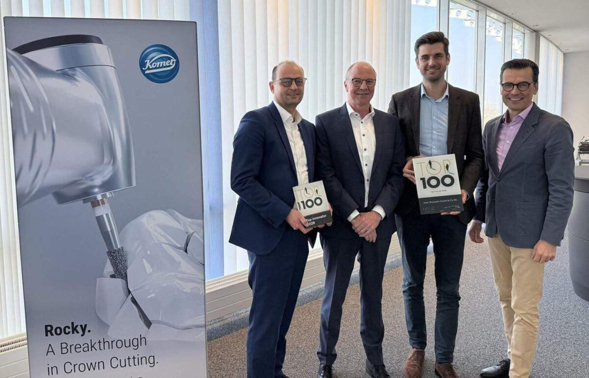
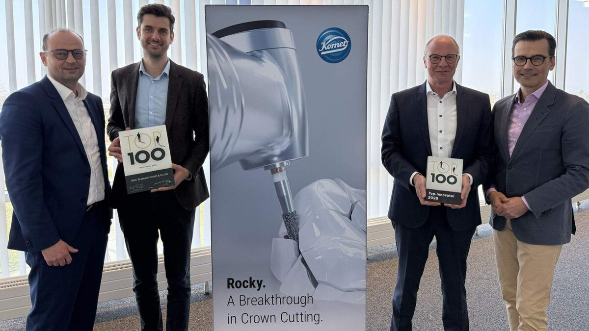

Brasseler has been awarded the TOP 100 Innovation Seal for the third time
Published on 13 March 2026
Lemgo, March 13th, 2026
The medtech company Brasseler is once again among Germany’s most innovative medium-sized companies in 2026. Following awards in 2022 and 2023, the Lemgo-based family business has received the prestigious TOP 100 Innovation Seal for the third time.
Brasseler particularly impressed the jury with its structurally embedded innovation management, which is not viewed as an isolated function but as an integral part of the company’s overall organization. In their assessment, the experts especially commended the professionalism of the innovation processes as well as the consistent development of structures and collaboration.
The nationwide TOP 100 innovation competition is based on a scientific selection process led by innovation researcher Prof. Dr. Nikolaus Franke. The innovative strength of SME companies is evaluated based on more than 100 criteria across five categories, including innovation management, innovation processes, and innovation success.
Systematic Innovation
In practice, this approach is reflected, among other things, in the systematic alignment of innovations with complete treatment pathways rather than individual products. This is complemented by the close involvement of users, universities, and external experts, as well as early collaboration with customers in development processes.
Within Komet Dental, this leads to solutions that address specific challenges encountered in everyday dental practice. Particularly noteworthy is the innovative “Rocky” instrument, which was developed specifically for the removal of particularly hard all-ceramic crowns made of zirconia or lithium disilicate. These materials place high demands on the performance and precision of the instruments used. Rocky combines high cutting performance with durability, thereby enabling more efficient, minimally invasive treatment procedures.
In the Komet Medical division, Brasseler also works closely with partners in the medical technology sector and contributes its technological expertise to development projects at an early stage.

“Receiving this award once again confirms that innovation at Brasseler is approached with a long-term perspective and implemented systematically,” says Stephan Köhler, Chairman of the Management Board. “It is the result of our strategic focus, the expertise of our employees, and our direct connection to experts and customers.”
The awards ceremony will take place on June 26, 2026, as part of the German SME Summit at the Heidelberg Congress Center. There, TOP 100 mentor Christian Wulff, former Federal President, will personally congratulate the award-winning companies.
Since 1993, the TOP 100 Award has been presented to small and medium-sized enterprises that demonstrate exceptional innovative strength and a track record of sustainable innovation. The competition is organized by compamedia GmbH in collaboration with project partners such as the Fraunhofer Society and the German Association for Small and Medium-Sized Businesses (BVMW).

v.l. Carsten Cieslik (Director Komet Dental), Michael Küllmer (Head of Innovation Management), Marcus Haynert (Head Product Management & Development) und Stephan Köhler (Chairman of the Management Board) alongside an illustration of the “Rocky” innovation

v.l. Carsten Cieslik (Director Komet Dental), Michael Küllmer (Head of Innovation Management), Marcus Haynert (Head Product Management & Development) und Stephan Köhler (Chairman of the Management Board) alongside an illustration of the “Rocky” innovation

Press Contact
Melanie Köhler
Corporate communication
Phone +49 (0) 160 3447748
presse@brasseler.de